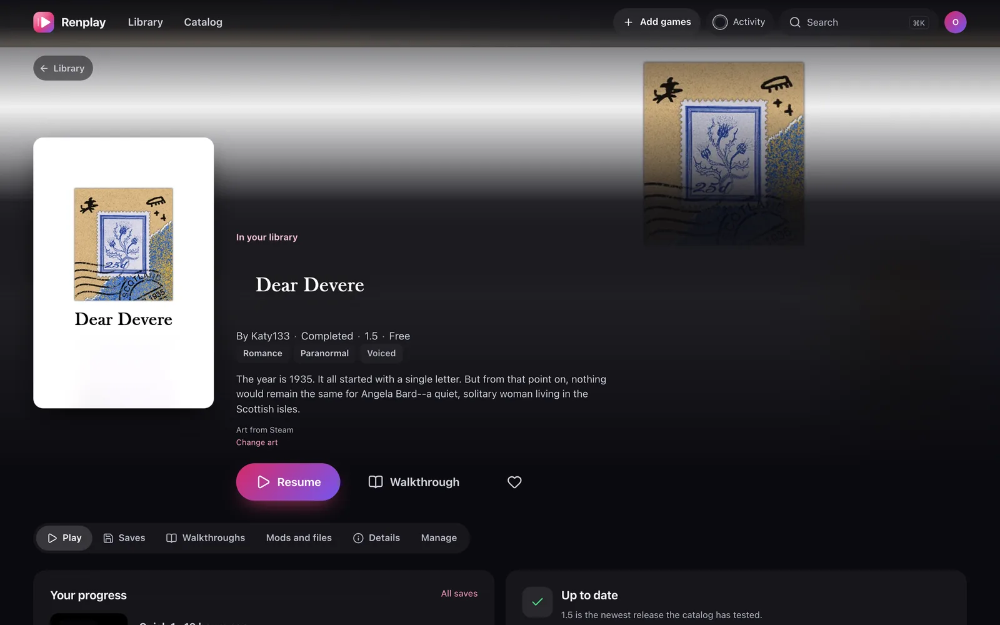
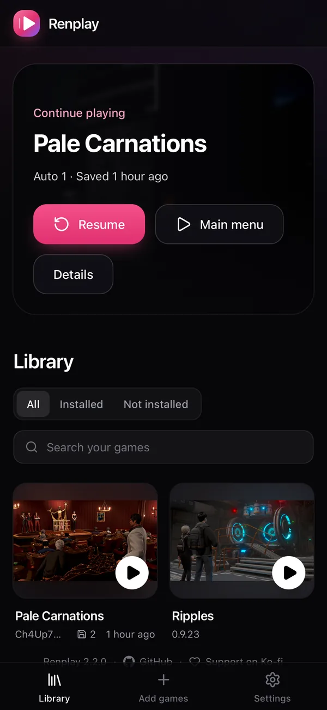

What it is for
The games you already download.
Visual novels from itch.io, Patreon and F95zone arrive as a PC download. Renplay turns that download into a game you can open anywhere.
Ren’Py first
Built for Ren’Py games, new and old. HTML games, like Twine stories, play too, with fewer features.
Adult and not
Many visual novels are for adults, and Renplay plays them like any other game. They are first-class here, not an afterthought.
Off, Blurred or Shown
Adult games have three levels: Off, Blurred and Shown. Each person chooses their own, within your limit, and at Blurred their pictures never leave your server.
Why Renplay
Visual novels shouldn’t be stuck
on one computer.
Ren’Py games ship as desktop downloads. That is fine until you want to read on the train, on the couch, or on the laptop you took on holiday.
Without Renplay
- ✕One machine per game. Your phone can’t run the PC version, and the Android build, when there is one, is another big download.
- ✕Saves that stay behind. Progress hides in a folder on one computer. Switch devices and you start over or copy files around.
- ✕Updates are a chore. Download 15 GB again, find the save folder, hope the old saves still load.
- ✕A messy folder of zips. No covers, no overview, no idea which version you have.
With Renplay
- ✓Every screen plays it. Any modern browser, including phones and tablets, full screen and smooth.
- ✓Saves follow you. Each save is on your server the moment you make it. Tap Resume anywhere.
- ✓Updates in one click. Add the new download. Your saves carry over, and Renplay tells you when a tested update is out.
- ✓A real library. Official art, versions, last played, and one tap back into your story.
How it works
Three steps. The first one is a download.
Add the game
Upload the normal PC download, the same zip you would play on Windows, or drop it into a folder.
Renplay prepares it
It unpacks the game, shrinks the images and builds a web version. Once, in a few minutes. No Ren’Py SDK needed.
Play anywhere
Open Renplay on any device and press Play. Your saves sync while you read.
Your library
Feels like a store you own.
Every game gets its official art, the developer’s links and the version you have. The first thing you see is the game you were playing.
- Resume in one tap from your latest save, on any device.
- Every save kept, with earlier versions you can restore.
- Update notices when a newer tested version of a game is out.


Made for phones
The couch is a great place to read.
Renplay is built for small screens as much as big ones, down to the camera cutout.
- Full screen, on iPhone from the home screen, on Android with one tap.
- Offline: keep a game on the phone and read on the plane. Saves go up when you land.
- Fits your screen, clear of the notch, and follows you when you turn the phone.
- The screen stays on while you read a long scene.
Everything included
Small touches that add up.
Saves you never lose
Saves, autosaves and unlocked galleries sync the moment the game writes them. Every overwrite keeps the previous version. If the connection drops, they wait and upload later.
Sequels just work
Season two finds season one’s saves, exactly like on desktop.
Bring your saves
Import saves from the desktop version, export them back, or move them with a Ren’Py Sync code.
Mods in the browser
Edit scripts or upload a mod. Your changes survive updates.
A tested catalog
Known games come with their art, links and the settings that work.
Private by design
Everything runs on your own hardware: no telemetry, nobody else’s cloud. Games are prepared without running their code on your server, and every person on it has their own saves, history and level for adult games.
Play offline
Keep a game in the browser and play with no network. Saves wait and go up when you are back.
A controller works
The d-pad moves around your library, and the game plays with Ren’Py’s own buttons.
One tablet, many readers
Who is playing? switches person with a PIN, each with their own saves.
Dashboards
Prometheus metrics and a Homepage widget show what your server is doing.
Get started
Up and running in a minute.
If you can run a Docker container, you can run Renplay. Point it at a folder for games and one for your saves.
- Run the command and open http://localhost:8080. Enter the setup code from
docker logs renplayand create your account. Renplay then asks whether to show adult games. - Go to Add games and upload a game’s PC download, then press Install and Play. On your phone, add Renplay to the home screen.
- Start with a free game. Dear Devere and Frightwood are free and safe for work. Get one from its developer, add it, and play.
Docker and Docker Compose, the NAS guides and every setting are in the docs.
docker run -d --name renplay -p 8080:8080 \
-v ./games:/games \
-v ./data:/data \
ghcr.io/renplay-org/renplay:latest
# compose.yaml services: renplay: image: ghcr.io/renplay-org/renplay:latest ports: ["8080:8080"] volumes: - ./games:/games # games and their downloads - ./data:/data # saves: back this up restart: unless-stopped
The image is ghcr.io/renplay-org/renplay, also renplay/renplay on Docker Hub. Use HTTPS outside your home network. To decide about adult games ahead of time, set RENPLAY_ADULT_GAMES to off, blurred or shown.
The catalog
Games other players already tested.
The community catalog lists games that work in Renplay: which download to get from the developer, its official art, and any settings it needs. It never hosts game files. Got one working? Add it in a pull request.
Questions
Good to know.
Which games work?
Games made with Ren’Py 8, and most games made with Ren’Py 7, which run on the same engine. That covers almost every visual novel of the last few years. HTML games, like Twine stories, play too, with fewer features. The catalog lists games that were tested, and most others work too.
Where do I get the games?
From their developers, as you do today: itch.io, Patreon, F95zone, Steam and so on. Renplay uses the normal PC download. Neither Renplay nor its catalog hosts game files.
Does it need a powerful server?
No. Installing a game uses some CPU for a few minutes, and playing is just serving files. Games run in your browser, so a small home server or NAS is plenty. Plan disk space like for the downloads themselves.
Can I still play on desktop Ren’Py?
Yes. Export a game’s saves and they work in the desktop version, and the other way round. Games made with Ren’Py 8.1 or newer can also move saves with a Sync code.
Does it work without the internet?
Yes, once a game is kept. Keep offline on a game’s page stores it in your browser, so it plays on a plane or a train, and the saves you make wait until you are back.
What about adult games?
They work like any other game, and adult games are a big part of what Renplay is for. There are three levels: Off leaves them out completely, Blurred shows them without their pictures, Shown shows everything. A new install asks once, or you set RENPLAY_ADULT_GAMES. Each person chooses their own level within yours, and Hide adult games here covers a screen other people can see.
Is it really free?
Yes, free and open source under the MIT license. If it makes your evenings better, you can support it on Ko-fi.
Your stories, wherever you are.
Set up Renplay tonight and pick up where you left off, on any screen.